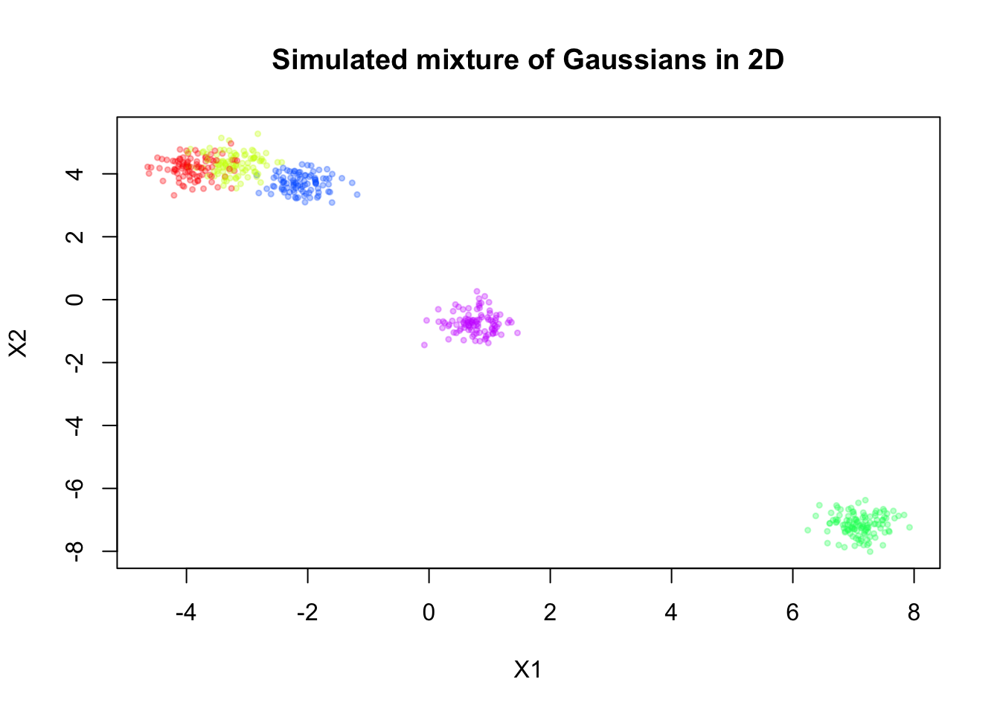
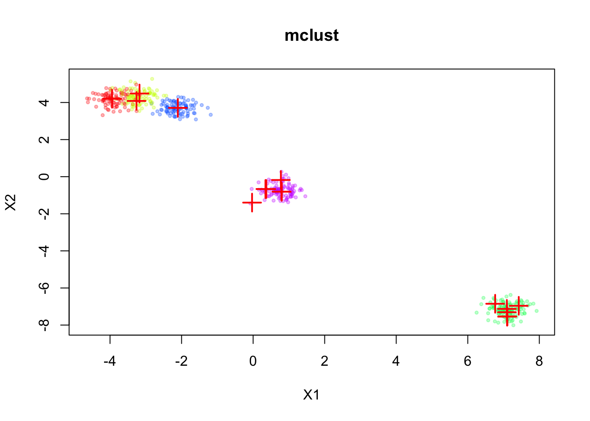
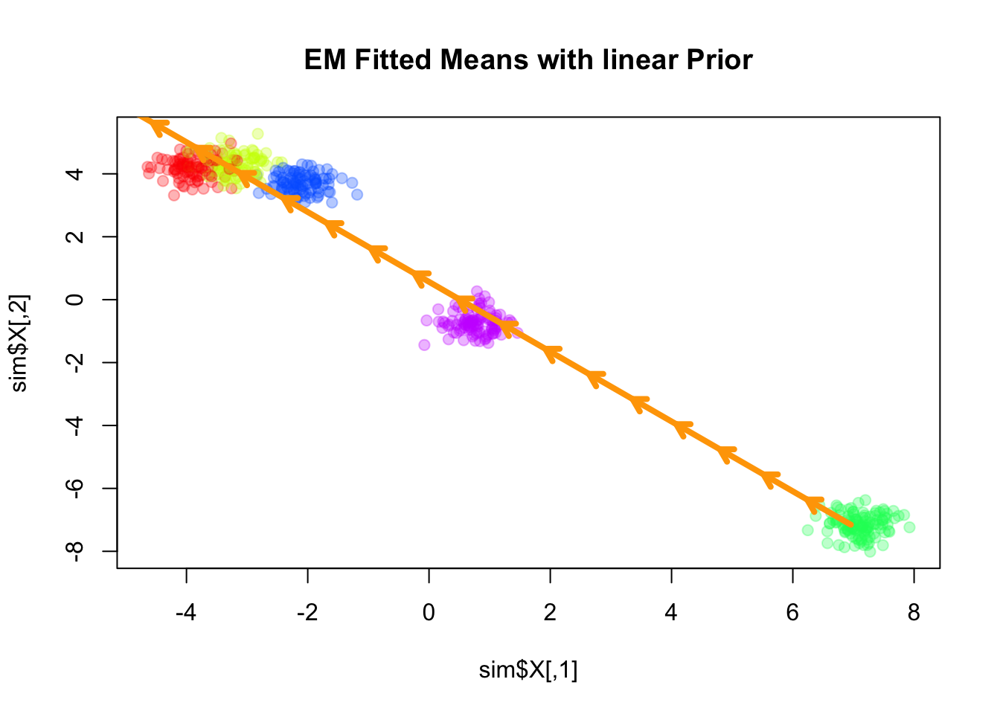
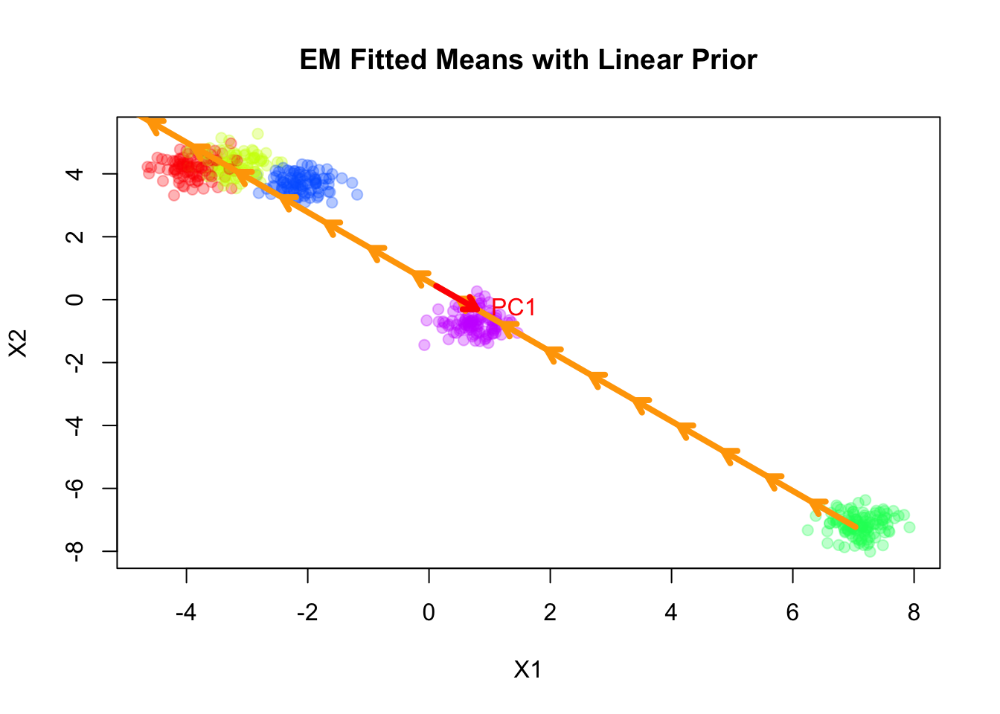
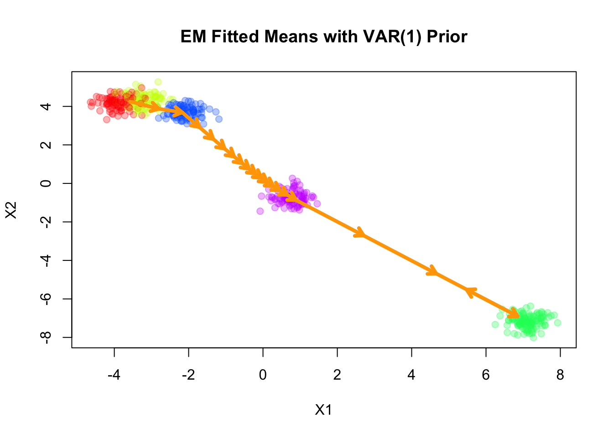
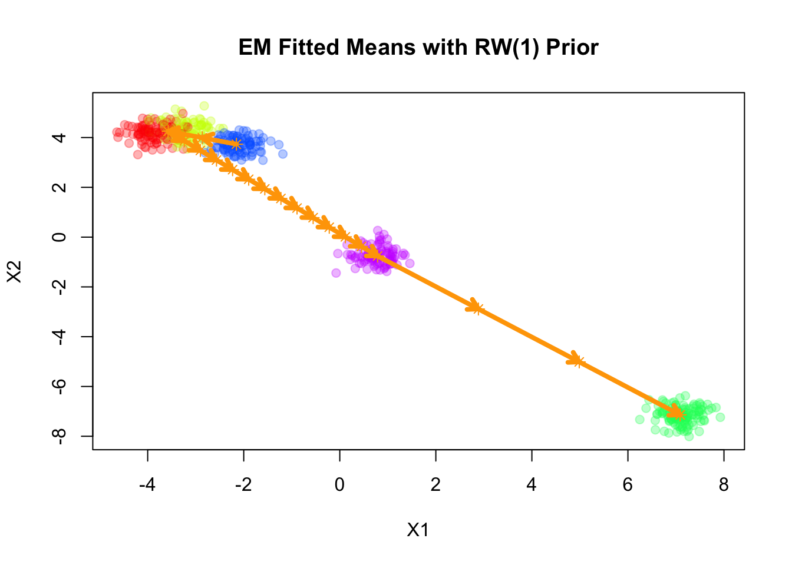
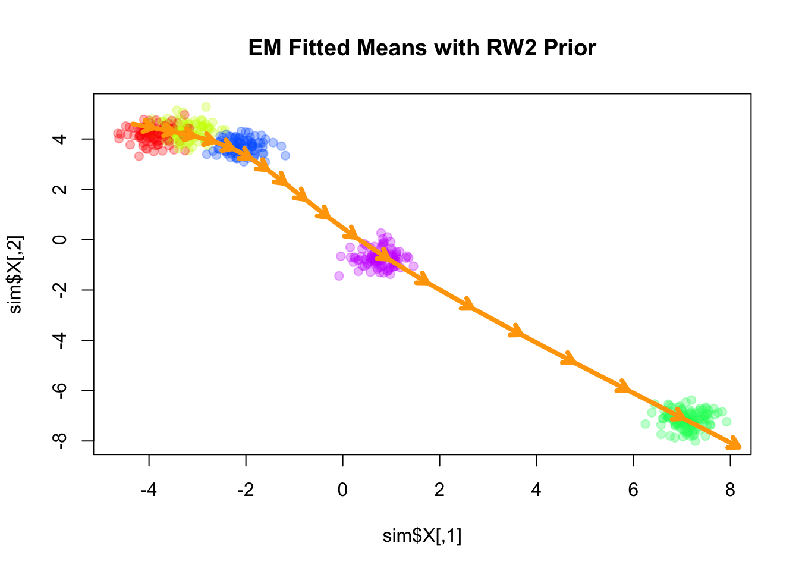
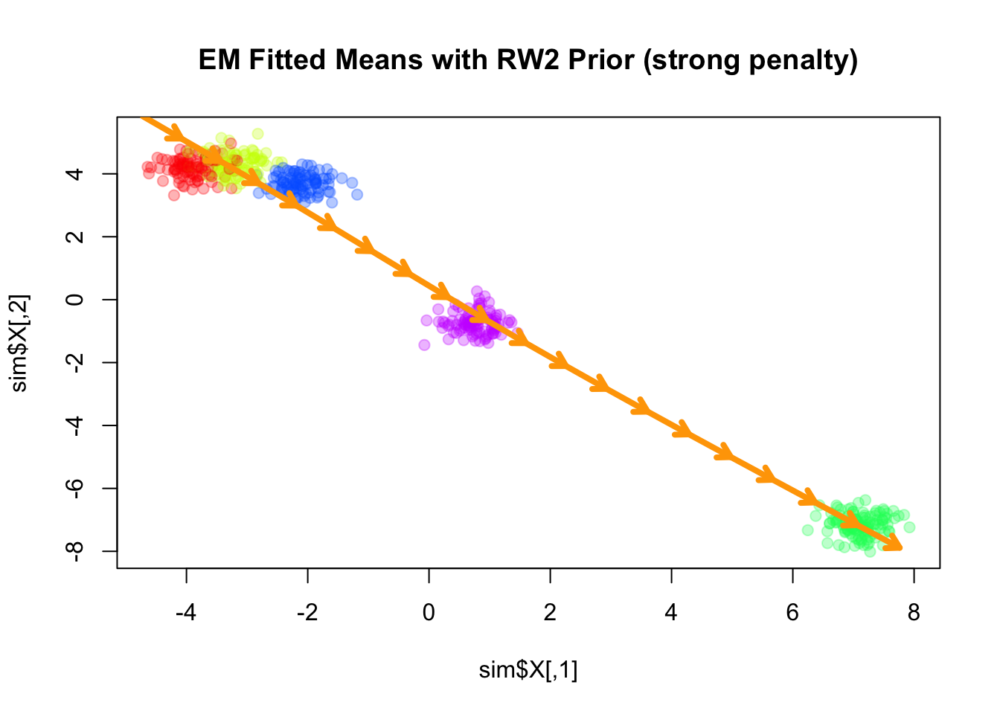

Last updated: 2025-07-08
Checks: 6 1
Knit directory: InferOrder/
This reproducible R Markdown analysis was created with workflowr (version 1.7.1). The Checks tab describes the reproducibility checks that were applied when the results were created. The Past versions tab lists the development history.
The R Markdown file has unstaged changes. To know which version of
the R Markdown file created these results, you’ll want to first commit
it to the Git repo. If you’re still working on the analysis, you can
ignore this warning. When you’re finished, you can run
wflow_publish to commit the R Markdown file and build the
HTML.
Great job! The global environment was empty. Objects defined in the global environment can affect the analysis in your R Markdown file in unknown ways. For reproduciblity it’s best to always run the code in an empty environment.
The command set.seed(20250707) was run prior to running
the code in the R Markdown file. Setting a seed ensures that any results
that rely on randomness, e.g. subsampling or permutations, are
reproducible.
Great job! Recording the operating system, R version, and package versions is critical for reproducibility.
Nice! There were no cached chunks for this analysis, so you can be confident that you successfully produced the results during this run.
Great job! Using relative paths to the files within your workflowr project makes it easier to run your code on other machines.
Great! You are using Git for version control. Tracking code development and connecting the code version to the results is critical for reproducibility.
The results in this page were generated with repository version dbcdf9a. See the Past versions tab to see a history of the changes made to the R Markdown and HTML files.
Note that you need to be careful to ensure that all relevant files for
the analysis have been committed to Git prior to generating the results
(you can use wflow_publish or
wflow_git_commit). workflowr only checks the R Markdown
file, but you know if there are other scripts or data files that it
depends on. Below is the status of the Git repository when the results
were generated:
Ignored files:
Ignored: .DS_Store
Ignored: .Rhistory
Ignored: .Rproj.user/
Ignored: analysis/.DS_Store
Untracked files:
Untracked: all_celltypes_umap.png
Untracked: code/general_EM_obs.R
Unstaged changes:
Modified: analysis/explore_smoothEM.rmd
Modified: code/general_EM.R
Modified: code/linear_EM.R
Note that any generated files, e.g. HTML, png, CSS, etc., are not included in this status report because it is ok for generated content to have uncommitted changes.
These are the previous versions of the repository in which changes were
made to the R Markdown (analysis/explore_smoothEM.rmd) and
HTML (docs/explore_smoothEM.html) files. If you’ve
configured a remote Git repository (see ?wflow_git_remote),
click on the hyperlinks in the table below to view the files as they
were in that past version.
| File | Version | Author | Date | Message |
|---|---|---|---|---|
| html | 2322978 | Ziang Zhang | 2025-07-08 | Build site. |
| html | 028201f | Ziang Zhang | 2025-07-08 | Build site. |
| Rmd | ccaa320 | Ziang Zhang | 2025-07-07 | workflowr::wflow_publish("analysis/explore_smoothEM.rmd") |
In this study, we consider a mixture model with \(K\) components, specified as follows: \[\begin{equation} \label{eq:smooth-EM} \begin{aligned} \boldsymbol{X}_i \mid z_i = k &\sim \mathcal{N}(\boldsymbol{\mu}_k, \boldsymbol{\Sigma}_k) \quad i\in [n], \\ \boldsymbol{U} = (\boldsymbol{\mu}_1, \ldots, \boldsymbol{\mu}_K) &\sim \mathcal{N}(\boldsymbol{0}, \mathbf{Q}^{-1}), \end{aligned} \end{equation}\] where \(\boldsymbol{X}_i \in \mathbb{R}^d\) denotes the observed data, \(z_i \in [K]\) is a latent indicator assigning observation \(i\) to component \(k\), \(\boldsymbol{\mu}_k \in \mathbb{R}^d\) is the mean vector of component \(k\), and \(\boldsymbol{\Sigma}_k \in \mathbb{R}^{d\times d}\) is its covariance matrix.
The prior distribution over the stacked mean vectors \(\boldsymbol{U}\) is multivariate normal with mean zero and precision matrix \(\mathbf{Q}\). This prior can encode smoothness or structural assumptions about how the component means evolve or are ordered (e.g., spatial or temporal constraints across \(k=1,\ldots,K\)).
Rather than using the standard EM algorithm, we employ a smooth-EM approach that incorporates this structured prior over component means. In this framework:
E-step (standard): \[ \gamma_{ik}^{(t)} = \frac{\pi_k^{(t)} \, \mathcal{N}(\boldsymbol{X}_i \mid \boldsymbol{\mu}_k^{(t)}, \boldsymbol{\Sigma}_k^{(t)})}{\sum_{j=1}^K \pi_j^{(t)} \, \mathcal{N}(\boldsymbol{X}_i \mid \boldsymbol{\mu}_j^{(t)}, \boldsymbol{\Sigma}_j^{(t)})}. \]
M-step (incorporating prior): \[ \begin{aligned} \{\pi^{(t+1)}, \mathbf{U}^{(t+1)}, \boldsymbol{\Sigma}^{(t+1)}\} &= \arg\max \, \mathbb{E}_{\gamma^{(t)}}\Big[\log p(\boldsymbol{X}, \mathbf{U}, \mathbf{Z} \mid \pi, \boldsymbol{\Sigma})\Big] \\ &= \arg\max \, \mathbb{E}_{\gamma^{(t)}}\Big[\log p(\boldsymbol{X}, \mathbf{Z} \mid \pi, \mathbf{U}, \boldsymbol{\Sigma}) + \log p(\mathbf{U})\Big] \\ &= \arg\max \, \bigg\{\mathbb{E}_{\gamma^{(t)}}\Big[\log p(\boldsymbol{X}, \mathbf{Z} \mid \pi, \mathbf{U}, \boldsymbol{\Sigma})\Big] - \frac{1}{2} \mathbf{U}^\top \mathbf{Q} \mathbf{U}\bigg\} \\ &= \arg\max \, \left\{ -\frac{1}{2} \sum_{i,k} \gamma_{ik}^{(t)} \|\boldsymbol{X}_i - \boldsymbol{\mu}_k\|^2_{\boldsymbol{\Sigma}_k^{-1}} - \frac{1}{2} \mathbf{U}^\top \mathbf{Q} \mathbf{U}\right\}. \end{aligned} \]
Unlike the standard EM algorithm, which maximizes the likelihood independently over component means, the smooth-EM algorithm performs MAP estimation that considers the prior of \(\boldsymbol{U}\), encouraging ordered or smooth transitions across components indexed by \(k\).
We will now explore how this smooth-EM algorithm behaves under different prior specifications for \(\mathbf{Q}\).
Here, we will simulate a mixture of Gaussians in 2D, for \(n = 500\) observations and \(K = 5\) components.
source("./code/simulate.R")
library(MASS)
library(mvtnorm)Warning: package 'mvtnorm' was built under R version 4.3.3palette_colors <- rainbow(5)
alpha_colors <- sapply(palette_colors, function(clr) adjustcolor(clr, alpha.f=0.3))
sim <- simulate_mixture(n=500, K = 5, d=2, seed=123, proj_mat = matrix(c(1,-0.6,-0.6,1), nrow = 2, byrow = T))plot(sim$X, col = alpha_colors[sim$z],
pch = 19, cex = 0.5,
xlab = "X1", ylab = "X2",
main = "Simulated mixture of Gaussians in 2D")
| Version | Author | Date |
|---|---|---|
| 028201f | Ziang Zhang | 2025-07-08 |
Now, let’s assume we don’t know there are five components, and we will fit a mixture model with \(K = 20\) components to this data. For simplicity, let’s assume \(\mathbf{\Sigma}_k = \sigma^2 \mathbf{I}\) for all \(k\), where \(\sigma^2\) is a constant variance across components.
First, we fit the standard EM algorithm to this mixture model without any prior on the means.
library(mclust)Package 'mclust' version 6.1.1
Type 'citation("mclust")' for citing this R package in publications.
Attaching package: 'mclust'The following object is masked from 'package:mvtnorm':
dmvnormfit_mclust <- Mclust(sim$X, G=20)plot(sim$X, col=alpha_colors[sim$z],
xlab="X1", ylab="X2",
cex=0.5, pch=19, main="mclust")
mclust_means <- t(fit_mclust$parameters$mean)
points(mclust_means, pch=3, cex=2, lwd=2, col="red")
| Version | Author | Date |
|---|---|---|
| 028201f | Ziang Zhang | 2025-07-08 |
The inferred means are shown in red. We can see that the means are well aligned with the true component means, but we don’t have a natural ordering of the means.
We consider the simplest case for the prior on the component means \(\mathbf{U}\), where \(\mathbf{Q}\) corresponds to a linear trend prior. Specifically, we assume that \[ \boldsymbol{\mu}_k = l_k \boldsymbol{\beta}, \] for some shared slope vector \(\boldsymbol{\beta} \in \mathbb{R}^d\), with \(\{l_k\}\) being equally spaced values increasing from \(-1\) to \(1\).
source("./code/linear_EM.R")
source("./code/general_EM.R")Warning: package 'matrixStats' was built under R version 4.3.3result_linear <- EM_algorithm_linear(
data = sim$X,
K = 20,
betaprec = 0.001,
seed = 1,
max_iter = 100,
verbose = TRUE
)Iteration 1: objective = -1794.785290
Iteration 2: objective = -1676.287607
Iteration 3: objective = -1594.534882
Iteration 4: objective = -1547.815205
Iteration 5: objective = -1520.284196
Iteration 6: objective = -1505.535764
Iteration 7: objective = -1499.831666
Iteration 8: objective = -1492.486764
Iteration 9: objective = -1467.281786
Iteration 10: objective = -1423.922556
Iteration 11: objective = -1392.955481
Iteration 12: objective = -1374.137729
Iteration 13: objective = -1362.239220
Iteration 14: objective = -1354.345894
Iteration 15: objective = -1348.967906
Iteration 16: objective = -1345.309281
Iteration 17: objective = -1342.819447
Iteration 18: objective = -1341.063884
Iteration 19: objective = -1339.599799
Iteration 20: objective = -1338.073416
Iteration 21: objective = -1336.802795
Iteration 22: objective = -1335.823345
Iteration 23: objective = -1334.509331
Iteration 24: objective = -1332.522383
Iteration 25: objective = -1329.292722
Iteration 26: objective = -1323.409944
Iteration 27: objective = -1315.566099
Iteration 28: objective = -1303.067541
Iteration 29: objective = -1285.883153
Iteration 30: objective = -1266.520610
Iteration 31: objective = -1242.896699
Iteration 32: objective = -1218.750880
Iteration 33: objective = -1195.032745
Iteration 34: objective = -1174.064575
Iteration 35: objective = -1159.252399
Iteration 36: objective = -1146.819267
Iteration 37: objective = -1139.761038
Iteration 38: objective = -1134.543798
Iteration 39: objective = -1132.456566
Iteration 40: objective = -1130.845108
Iteration 41: objective = -1129.007986
Iteration 42: objective = -1126.329907
Iteration 43: objective = -1123.545288
Iteration 44: objective = -1121.857487
Iteration 45: objective = -1120.831180
Iteration 46: objective = -1120.219780
Iteration 47: objective = -1119.844230
Iteration 48: objective = -1119.534582
Iteration 49: objective = -1119.234419
Iteration 50: objective = -1118.912224
Iteration 51: objective = -1118.575739
Iteration 52: objective = -1118.300720
Iteration 53: objective = -1118.084234
Iteration 54: objective = -1117.889961
Iteration 55: objective = -1117.712607
Iteration 56: objective = -1117.549722
Iteration 57: objective = -1117.386903
Iteration 58: objective = -1117.178771
Iteration 59: objective = -1116.878916
Iteration 60: objective = -1116.526803
Iteration 61: objective = -1116.195578
Iteration 62: objective = -1115.909015
Iteration 63: objective = -1115.662271
Iteration 64: objective = -1115.447616
Iteration 65: objective = -1115.259644
Iteration 66: objective = -1115.094964
Iteration 67: objective = -1114.951226
Iteration 68: objective = -1114.826497
Iteration 69: objective = -1114.719243
Iteration 70: objective = -1114.629180
Iteration 71: objective = -1114.559518
Iteration 72: objective = -1114.511041
Iteration 73: objective = -1114.314872
Iteration 74: objective = -1113.482912
Iteration 75: objective = -1113.790817
Converged at iteration 75 with objective -1113.790817plot(sim$X, col=alpha_colors[sim$z], cex=1,
pch=19, main="EM Fitted Means with linear Prior")
# Turn mu_list into matrix
mu_matrix <- do.call(rbind, result_linear$params$mu)
# Draw arrows showing sequence
for (k in 1:(nrow(mu_matrix)-1)) {
arrows(mu_matrix[k,1], mu_matrix[k,2],
mu_matrix[k+1,1], mu_matrix[k+1,2],
col="orange", lwd=4, length=0.1)
}
| Version | Author | Date |
|---|---|---|
| 028201f | Ziang Zhang | 2025-07-08 |
Here the fitted means are shown as orange arrows, with direction indicating the order of the components.
Note that the fitted slope \(\boldsymbol{\beta}\) is very close to the first principal component of the data.
plot(sim$X, col=alpha_colors[sim$z], cex=1,
xlab="X1", ylab="X2",
pch=19, main="EM Fitted Means with Linear Prior")
# Turn mu_list into matrix
mu_matrix <- do.call(rbind, result_linear$params$mu)
# Draw arrows showing sequence of cluster means
for (k in 1:(nrow(mu_matrix)-1)) {
if (sqrt(sum((mu_matrix[k+1,] - mu_matrix[k,])^2)) > 1e-6) {
arrows(mu_matrix[k,1], mu_matrix[k,2],
mu_matrix[k+1,1], mu_matrix[k+1,2],
col="orange", lwd=4, length=0.1)
}
}
# ====== Fit PCA ======
pca_fit <- prcomp(sim$X, center=TRUE, scale.=FALSE)
pcs <- pca_fit$rotation # columns are PC directions
X_center <- colMeans(sim$X)
# Set radius for arrows
radius <- 1
# ====== Draw PC arrows ======
arrows(
X_center[1], X_center[2],
X_center[1] + radius * pcs[1,1],
X_center[2] + radius * pcs[2,1],
col="red", lwd=4, length=0.1
)
text(
X_center[1] + radius * pcs[1,1],
X_center[2] + radius * pcs[2,1],
labels="PC1", pos=4, col="red"
)
| Version | Author | Date |
|---|---|---|
| 028201f | Ziang Zhang | 2025-07-08 |
Next, we consider a first-order vector autoregressive (VAR(1)) prior on the component means. Under this prior, each component mean \(\boldsymbol{\mu}_k\) depends linearly on its immediate predecessor \(\boldsymbol{\mu}_{k-1}\), with Gaussian noise: \[ \begin{aligned} \boldsymbol{\mu}_k &= \mathbf{A} \boldsymbol{\mu}_{k-1} + \boldsymbol{\epsilon}_k, \\ \boldsymbol{\epsilon}_k &\sim \mathcal{N}(\mathbf{0}, \mathbf{Q}_\epsilon^{-1}), \end{aligned} \] where \(\mathbf{A}\) is the transition matrix encoding the dependence of the current mean on the previous mean, and \(\mathbf{Q}_\epsilon\) is the precision matrix of the noise term.
Let’s for now assume the transition matrix \(\mathbf{A}\) and the noise precision matrix \(\mathbf{Q}_\epsilon\) are given by:
\[ \mathbf{A} = 0.8 \, \mathbf{I}_2 \] \[ \mathbf{Q}_\epsilon = 0.1 \, \mathbf{I}_2 \]
where \(\mathbf{I}_2\) is the 2-dimensional identity matrix.
source("./code/prior_precision.R")
Q_prior_VAR1 <- make_VAR1_precision(K=20, d=2, A = diag(2) * 0.8, Q = diag(2) * 0.1)
set.seed(1)
init_params <- make_default_init(sim$X, K=20)
result_VAR1 <- EM_algorithm(
data = sim$X,
Q_prior = Q_prior_VAR1,
init_params = init_params,
max_iter = 100,
modelName = "EII",
tol = 1e-5,
verbose = TRUE
)Iteration 1: objective = -1958.4957
Iteration 2: objective = -1716.3758
Iteration 3: objective = -1621.1090
Iteration 4: objective = -1483.2038
Iteration 5: objective = -1482.9465
Iteration 6: objective = -1482.7929
Iteration 7: objective = -1482.5235
Iteration 8: objective = -1482.0087
Iteration 9: objective = -1480.9540
Iteration 10: objective = -1478.6996
Iteration 11: objective = -1473.9652
Iteration 12: objective = -1464.8801
Iteration 13: objective = -1449.2401
Iteration 14: objective = -1424.5433
Iteration 15: objective = -1390.0631
Iteration 16: objective = -1350.8749
Iteration 17: objective = -1316.2225
Iteration 18: objective = -1294.2820
Iteration 19: objective = -1286.2432
Iteration 20: objective = -1285.0849
Converged at iteration 21 with objective -1285.3027plot(sim$X, col=alpha_colors[sim$z], cex=1,
xlab="X1", ylab="X2",
pch=19, main="EM Fitted Means with VAR(1) Prior")
# Turn mu_list into matrix
mu_matrix <- do.call(rbind, result_VAR1$params$mu)
# Draw arrows showing sequence of cluster means
for (k in 1:(nrow(mu_matrix)-1)) {
if (sqrt(sum((mu_matrix[k+1,] - mu_matrix[k,])^2)) > 1e-6) {
arrows(mu_matrix[k,1], mu_matrix[k,2],
mu_matrix[k+1,1], mu_matrix[k+1,2],
col="orange", lwd=4, length=0.1)
}
}
| Version | Author | Date |
|---|---|---|
| 028201f | Ziang Zhang | 2025-07-08 |
Next, we consider a first-order random walk (RW1) prior on the component means, formulated using the difference operator. Under this prior, successive differences of the means are modeled as independent Gaussian noise:
\[ \Delta \boldsymbol{\mu}_k = \boldsymbol{\mu}_k - \boldsymbol{\mu}_{k-1} \sim \mathcal{N}\big(\mathbf{0}, \lambda^{-1} \mathbf{I}_d\big), \]
where \(\lambda\) is a scalar precision parameter that controls the smoothness of the mean sequence. Larger values of \(\lambda\) enforce stronger smoothness by penalizing large differences between successive component means.
Q_prior_RW1 <- make_random_walk_precision(K=20, d=2, lambda = 5)
result_RW1 <- EM_algorithm(
data = sim$X,
Q_prior = Q_prior_RW1,
init_params = init_params,
max_iter = 100,
modelName = "EII",
tol = 1e-5,
verbose = TRUE
)Iteration 1: objective = -1669.1600
Iteration 2: objective = -1447.0245
Iteration 3: objective = -1430.4711
Iteration 4: objective = -1417.7644
Iteration 5: objective = -1352.0973
Iteration 6: objective = -1320.7124
Iteration 7: objective = -1320.7116
Iteration 8: objective = -1320.7105
Iteration 9: objective = -1320.7081
Iteration 10: objective = -1320.7029
Iteration 11: objective = -1320.6914
Iteration 12: objective = -1320.6650
Iteration 13: objective = -1320.5996
Iteration 14: objective = -1320.4142
Iteration 15: objective = -1319.7833
Iteration 16: objective = -1317.4450
Iteration 17: objective = -1309.8554
Iteration 18: objective = -1289.4234
Iteration 19: objective = -1244.3649
Iteration 20: objective = -1170.6025
Iteration 21: objective = -1110.6832
Iteration 22: objective = -1097.4406
Iteration 23: objective = -1096.1111
Iteration 24: objective = -1095.8917
Iteration 25: objective = -1095.8366
Iteration 26: objective = -1095.8194
Iteration 27: objective = -1095.8132
Iteration 28: objective = -1095.8107
Iteration 29: objective = -1095.8094
Iteration 30: objective = -1095.8084
Iteration 31: objective = -1095.8075
Iteration 32: objective = -1095.8067
Iteration 33: objective = -1095.8057
Iteration 34: objective = -1095.8046
Iteration 35: objective = -1095.8034
Iteration 36: objective = -1095.8021
Iteration 37: objective = -1095.8006
Iteration 38: objective = -1095.7989
Iteration 39: objective = -1095.7969
Iteration 40: objective = -1095.7947
Iteration 41: objective = -1095.7922
Iteration 42: objective = -1095.7893
Iteration 43: objective = -1095.7860
Iteration 44: objective = -1095.7822
Iteration 45: objective = -1095.7777
Iteration 46: objective = -1095.7726
Iteration 47: objective = -1095.7666
Iteration 48: objective = -1095.7596
Iteration 49: objective = -1095.7514
Iteration 50: objective = -1095.7417
Iteration 51: objective = -1095.7302
Iteration 52: objective = -1095.7166
Iteration 53: objective = -1095.7003
Iteration 54: objective = -1095.6807
Iteration 55: objective = -1095.6572
Iteration 56: objective = -1095.6285
Iteration 57: objective = -1095.5935
Iteration 58: objective = -1095.5503
Iteration 59: objective = -1095.4966
Iteration 60: objective = -1095.4291
Iteration 61: objective = -1095.3434
Iteration 62: objective = -1095.2334
Iteration 63: objective = -1095.0904
Iteration 64: objective = -1094.9024
Iteration 65: objective = -1094.6524
Iteration 66: objective = -1094.3169
Iteration 67: objective = -1093.8643
Iteration 68: objective = -1093.2545
Iteration 69: objective = -1092.4416
Iteration 70: objective = -1091.3828
Iteration 71: objective = -1090.0571
Iteration 72: objective = -1088.4902
Iteration 73: objective = -1086.7685
Iteration 74: objective = -1085.0190
Iteration 75: objective = -1083.3649
Iteration 76: objective = -1081.8967
Iteration 77: objective = -1080.6658
Iteration 78: objective = -1079.6840
Iteration 79: objective = -1078.9293
Iteration 80: objective = -1078.3626
Iteration 81: objective = -1077.9450
Iteration 82: objective = -1077.6462
Iteration 83: objective = -1077.4426
Iteration 84: objective = -1077.3103
Iteration 85: objective = -1077.2143
Iteration 86: objective = -1077.0918
Iteration 87: objective = -1076.8202
Iteration 88: objective = -1076.1348
Iteration 89: objective = -1074.1889
Iteration 90: objective = -1067.4701
Iteration 91: objective = -1053.8526
Iteration 92: objective = -1051.5103
Iteration 93: objective = -1051.3568
Iteration 94: objective = -1051.2443
Iteration 95: objective = -1051.1521
Iteration 96: objective = -1051.0744
Iteration 97: objective = -1051.0085
Iteration 98: objective = -1050.9522
Iteration 99: objective = -1050.9042
Iteration 100: objective = -1050.8632plot(sim$X, col=alpha_colors[sim$z], cex=1,
xlab="X1", ylab="X2",
pch=19, main="EM Fitted Means with RW(1) Prior")
# Turn mu_list into matrix
mu_matrix <- do.call(rbind, result_RW1$params$mu)
# Draw arrows showing sequence of cluster means
for (k in 1:(nrow(mu_matrix)-1)) {
if (sqrt(sum((mu_matrix[k+1,] - mu_matrix[k,])^2)) > 1e-6) {
arrows(mu_matrix[k,1], mu_matrix[k,2],
mu_matrix[k+1,1], mu_matrix[k+1,2],
col="orange", lwd=4, length=0.1)
}
}Warning in arrows(mu_matrix[k, 1], mu_matrix[k, 2], mu_matrix[k + 1, 1], :
zero-length arrow is of indeterminate angle and so skipped
Warning in arrows(mu_matrix[k, 1], mu_matrix[k, 2], mu_matrix[k + 1, 1], :
zero-length arrow is of indeterminate angle and so skipped
Warning in arrows(mu_matrix[k, 1], mu_matrix[k, 2], mu_matrix[k + 1, 1], :
zero-length arrow is of indeterminate angle and so skipped
| Version | Author | Date |
|---|---|---|
| 028201f | Ziang Zhang | 2025-07-08 |
The result of RW1 looks similar to that of VAR(1), which is not surprising since the RW1 prior is a special case of the VAR(1) prior with \(\mathbf{A} = \mathbf{I}\).
Note that RW1 is a partially improper prior, as the overall level of the means is not penalized. In other words, the prior is invariant to addition of any constant vector to all component means.
Next, we consider a second-order random walk (RW2) prior on the component means, which penalizes the second differences of the means:
\[ \Delta^2 \boldsymbol{\mu}_k = \boldsymbol{\mu}_k - 2\boldsymbol{\mu}_{k-1} + \boldsymbol{\mu}_{k-2} \sim \mathcal{N}\big(\mathbf{0}, \lambda^{-1} \mathbf{I}_d\big), \]
where \(\Delta^2 \boldsymbol{\mu}_k\) denotes the second-order difference operator. The scalar precision parameter \(\lambda\) controls the smoothness of the sequence, with larger values enforcing stronger penalization of curvature.
Q_prior_rw2 <- make_random_walk_precision(K = 20, d = 2, q=2, lambda=400)
result_rw2 <- EM_algorithm(
data = sim$X,
Q_prior = Q_prior_rw2,
init_params = init_params,
max_iter = 100,
modelName = "EII",
tol = 1e-5,
verbose = TRUE
)Iteration 1: objective = -2717.3131
Iteration 2: objective = -2040.4867
Iteration 3: objective = -1712.1471
Iteration 4: objective = -1626.4376
Iteration 5: objective = -1384.5483
Iteration 6: objective = -1220.9010
Iteration 7: objective = -1198.9225
Iteration 8: objective = -1195.9110
Iteration 9: objective = -1195.2222
Iteration 10: objective = -1194.4981
Iteration 11: objective = -1193.2618
Iteration 12: objective = -1190.6613
Iteration 13: objective = -1184.5477
Iteration 14: objective = -1169.4566
Iteration 15: objective = -1134.6713
Iteration 16: objective = -1076.3360
Iteration 17: objective = -1032.1404
Iteration 18: objective = -1022.9190
Iteration 19: objective = -1022.2435
Iteration 20: objective = -1022.2303
Iteration 21: objective = -1022.1385
Iteration 22: objective = -1021.9050
Iteration 23: objective = -1021.4831
Iteration 24: objective = -1020.7971
Iteration 25: objective = -1019.7545
Iteration 26: objective = -1018.2650
Iteration 27: objective = -1016.2637
Iteration 28: objective = -1013.7339
Iteration 29: objective = -1010.7330
Iteration 30: objective = -1007.4247
Iteration 31: objective = -1004.0931
Iteration 32: objective = -1001.0844
Iteration 33: objective = -998.6681
Iteration 34: objective = -996.9198
Iteration 35: objective = -995.7364
Iteration 36: objective = -994.9474
Iteration 37: objective = -994.4062
Iteration 38: objective = -994.0169
Iteration 39: objective = -993.7237
Iteration 40: objective = -993.4947
Iteration 41: objective = -993.3106
Iteration 42: objective = -993.1591
Iteration 43: objective = -993.0317
Iteration 44: objective = -992.9223
Iteration 45: objective = -992.8264
Iteration 46: objective = -992.7407
Iteration 47: objective = -992.6623
Iteration 48: objective = -992.5895
Iteration 49: objective = -992.5204
Iteration 50: objective = -992.4537
Iteration 51: objective = -992.3883
Iteration 52: objective = -992.3234
Iteration 53: objective = -992.2580
Iteration 54: objective = -992.1914
Iteration 55: objective = -992.1230
Iteration 56: objective = -992.0521
Iteration 57: objective = -991.9783
Iteration 58: objective = -991.9011
Iteration 59: objective = -991.8198
Iteration 60: objective = -991.7342
Iteration 61: objective = -991.6437
Iteration 62: objective = -991.5480
Iteration 63: objective = -991.4468
Iteration 64: objective = -991.3396
Iteration 65: objective = -991.2263
Iteration 66: objective = -991.1064
Iteration 67: objective = -990.9799
Iteration 68: objective = -990.8465
Iteration 69: objective = -990.7060
Iteration 70: objective = -990.5584
Iteration 71: objective = -990.4036
Iteration 72: objective = -990.2415
Iteration 73: objective = -990.0722
Iteration 74: objective = -989.8957
Iteration 75: objective = -989.7121
Iteration 76: objective = -989.5215
Iteration 77: objective = -989.3240
Iteration 78: objective = -989.1198
Iteration 79: objective = -988.9091
Iteration 80: objective = -988.6922
Iteration 81: objective = -988.4692
Iteration 82: objective = -988.2404
Iteration 83: objective = -988.0061
Iteration 84: objective = -987.7666
Iteration 85: objective = -987.5223
Iteration 86: objective = -987.2734
Iteration 87: objective = -987.0204
Iteration 88: objective = -986.7636
Iteration 89: objective = -986.5036
Iteration 90: objective = -986.2407
Iteration 91: objective = -985.9754
Iteration 92: objective = -985.7084
Iteration 93: objective = -985.4401
Iteration 94: objective = -985.1712
Iteration 95: objective = -984.9024
Iteration 96: objective = -984.6342
Iteration 97: objective = -984.3674
Iteration 98: objective = -984.1027
Iteration 99: objective = -983.8407
Iteration 100: objective = -983.5823plot(sim$X, col=alpha_colors[sim$z], cex=1,
pch=19, main="EM Fitted Means with RW2 Prior")
# Turn mu_list into matrix
mu_matrix <- do.call(rbind, result_rw2$params$mu)
# Draw arrows showing sequence
for (k in 1:(nrow(mu_matrix)-1)) {
arrows(mu_matrix[k,1], mu_matrix[k,2],
mu_matrix[k+1,1], mu_matrix[k+1,2],
col="orange", lwd=4, length=0.1)
}
| Version | Author | Date |
|---|---|---|
| 028201f | Ziang Zhang | 2025-07-08 |
Similar to the RW1 prior, the RW2 prior is also a partially improper prior, as it is invariant to addition of a constant vector as well as a linear trend (in terms of \(k\)) to all component means. As \(\lambda\) increases, the fitted means become closer to a linear trend.
Q_prior_rw2_strong <- make_random_walk_precision(K = 20, d = 2, q=2, lambda=4000)
Q_prior_rw2_strong <- EM_algorithm(
data = sim$X,
Q_prior = Q_prior_rw2_strong,
init_params = init_params,
max_iter = 100,
modelName = "EII",
tol = 1e-5,
verbose = TRUE
)Iteration 1: objective = -2543.3091
Iteration 2: objective = -1875.5104
Iteration 3: objective = -1225.2726
Iteration 4: objective = -1180.2106
Iteration 5: objective = -1177.4332
Iteration 6: objective = -1171.3993
Iteration 7: objective = -1159.9830
Iteration 8: objective = -1143.1198
Iteration 9: objective = -1126.1589
Iteration 10: objective = -1114.7535
Iteration 11: objective = -1106.9885
Iteration 12: objective = -1099.3001
Iteration 13: objective = -1090.3622
Iteration 14: objective = -1080.6620
Iteration 15: objective = -1072.0990
Iteration 16: objective = -1066.5441
Iteration 17: objective = -1063.9732
Iteration 18: objective = -1063.0584
Iteration 19: objective = -1062.7694
Iteration 20: objective = -1062.6747
Iteration 21: objective = -1062.6364
Iteration 22: objective = -1062.6116
Iteration 23: objective = -1062.5833
Iteration 24: objective = -1062.5382
Iteration 25: objective = -1062.4584
Iteration 26: objective = -1062.3137
Iteration 27: objective = -1062.0516
Iteration 28: objective = -1061.5820
Iteration 29: objective = -1060.7606
Iteration 30: objective = -1059.3833
Iteration 31: objective = -1057.2288
Iteration 32: objective = -1054.2017
Iteration 33: objective = -1050.5410
Iteration 34: objective = -1046.8627
Iteration 35: objective = -1043.8279
Iteration 36: objective = -1041.7294
Iteration 37: objective = -1040.4537
Iteration 38: objective = -1039.7286
Iteration 39: objective = -1039.3187
Iteration 40: objective = -1039.0764
Iteration 41: objective = -1038.9221
Iteration 42: objective = -1038.8162
Iteration 43: objective = -1038.7395
Iteration 44: objective = -1038.6818
Iteration 45: objective = -1038.6378
Iteration 46: objective = -1038.6039
Iteration 47: objective = -1038.5779
Iteration 48: objective = -1038.5578
Iteration 49: objective = -1038.5424
Iteration 50: objective = -1038.5307
Iteration 51: objective = -1038.5217
Iteration 52: objective = -1038.5149
Iteration 53: objective = -1038.5097
Iteration 54: objective = -1038.5058
Iteration 55: objective = -1038.5028
Iteration 56: objective = -1038.5006
Iteration 57: objective = -1038.4990
Iteration 58: objective = -1038.4978
Iteration 59: objective = -1038.4969
Iteration 60: objective = -1038.4962
Iteration 61: objective = -1038.4957
Iteration 62: objective = -1038.4954
Iteration 63: objective = -1038.4952
Iteration 64: objective = -1038.4950
Iteration 65: objective = -1038.4949
Iteration 66: objective = -1038.4948
Iteration 67: objective = -1038.4948
Iteration 68: objective = -1038.4948
Converged at iteration 69 with objective -1038.4948plot(sim$X, col=alpha_colors[sim$z], cex=1,
pch=19, main="EM Fitted Means with RW2 Prior (strong penalty)")
# Turn mu_list into matrix
mu_matrix <- do.call(rbind, Q_prior_rw2_strong$params$mu)
# Draw arrows showing sequence
for (k in 1:(nrow(mu_matrix)-1)) {
arrows(mu_matrix[k,1], mu_matrix[k,2],
mu_matrix[k+1,1], mu_matrix[k+1,2],
col="orange", lwd=4, length=0.1)
}
| Version | Author | Date |
|---|---|---|
| 028201f | Ziang Zhang | 2025-07-08 |
sessionInfo()R version 4.3.1 (2023-06-16)
Platform: aarch64-apple-darwin20 (64-bit)
Running under: macOS Monterey 12.7.4
Matrix products: default
BLAS: /Library/Frameworks/R.framework/Versions/4.3-arm64/Resources/lib/libRblas.0.dylib
LAPACK: /Library/Frameworks/R.framework/Versions/4.3-arm64/Resources/lib/libRlapack.dylib; LAPACK version 3.11.0
locale:
[1] en_US.UTF-8/en_US.UTF-8/en_US.UTF-8/C/en_US.UTF-8/en_US.UTF-8
time zone: America/Chicago
tzcode source: internal
attached base packages:
[1] stats graphics grDevices utils datasets methods base
other attached packages:
[1] Matrix_1.6-4 matrixStats_1.4.1 mclust_6.1.1 mvtnorm_1.3-1
[5] MASS_7.3-60
loaded via a namespace (and not attached):
[1] jsonlite_2.0.0 compiler_4.3.1 promises_1.3.3 Rcpp_1.0.14
[5] stringr_1.5.1 git2r_0.33.0 later_1.4.2 jquerylib_0.1.4
[9] yaml_2.3.10 fastmap_1.2.0 lattice_0.22-6 R6_2.6.1
[13] workflowr_1.7.1 knitr_1.50 tibble_3.2.1 rprojroot_2.0.4
[17] bslib_0.9.0 pillar_1.10.2 rlang_1.1.6 cachem_1.1.0
[21] stringi_1.8.7 httpuv_1.6.16 xfun_0.52 fs_1.6.6
[25] sass_0.4.10 cli_3.6.5 magrittr_2.0.3 digest_0.6.37
[29] grid_4.3.1 rstudioapi_0.16.0 lifecycle_1.0.4 vctrs_0.6.5
[33] evaluate_1.0.3 glue_1.8.0 whisker_0.4.1 rmarkdown_2.28
[37] tools_4.3.1 pkgconfig_2.0.3 htmltools_0.5.8.1